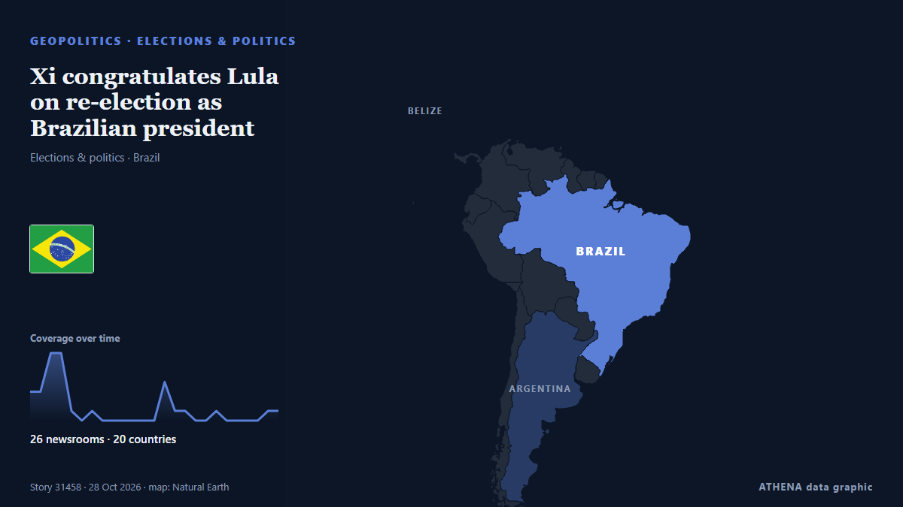

Xi congratulates Lula on re-election as Brazilian president

Chinese President Xi Jinping on Tuesday extended congratulations to Luiz Inacio Lula da Silva on his re-election as president of Brazil. von CGTN (China)
Unabhängig gemeldet von 26 Medien in 20 Ländern seit dem 26. Okt., zuerst von Gulf News; die Berichterstattung ist abgeklungen. ATHENA findet in der Berichterstattung keine Risikoindikatoren. Die Konfidenz liegt bei 92 % (hoch): 26 Medien bestätigen es unabhängig, bei einer mittleren Verlässlichkeit der Quellen von 75 %.
Warum es wichtig ist: Sicherheits- und diplomatische Entwicklungen können Bündnisse, Handel und Märkte weit über die direkt beteiligten Länder hinaus verschieben.
Was sich geändert hat: 9 neue Berichte von 8 Redaktionen in den 24 Stunden bis 28. Okt..
Schlagzeilen werden auf Englisch angezeigt, wie veröffentlicht.
Auf einen Blick
Ausgewählt, bewertet und geschrieben nach der veröffentlichten Methodik von ATHENA. Kein Redakteur greift in einzelne Ereignisse ein. So entsteht ATHENA ›
| 26 Oct 07:33 UTC | 3 |
|---|---|
| 26 Oct 09:33 UTC | 3 |
| 26 Oct 11:33 UTC | 7 |
| 26 Oct 13:33 UTC | 7 |
| 26 Oct 15:33 UTC | 1 |
| 26 Oct 17:33 UTC | 0 |
| 26 Oct 19:33 UTC | 1 |
| 26 Oct 21:33 UTC | 0 |
| 26 Oct 23:33 UTC | 0 |
| 27 Oct 01:33 UTC | 0 |
| 27 Oct 03:33 UTC | 0 |
| 27 Oct 05:33 UTC | 0 |
| 27 Oct 07:33 UTC | 0 |
| 27 Oct 09:33 UTC | 4 |
| 27 Oct 11:33 UTC | 1 |
| 27 Oct 13:33 UTC | 1 |
| 27 Oct 15:33 UTC | 0 |
| 27 Oct 17:33 UTC | 0 |
| 27 Oct 19:33 UTC | 1 |
| 27 Oct 21:33 UTC | 0 |
| 27 Oct 23:33 UTC | 0 |
| 28 Oct 01:33 UTC | 0 |
| 28 Oct 03:33 UTC | 0 |
| 28 Oct 05:33 UTC | 1 |
| 28 Oct 07:33 UTC | 1 |
Warum diese Zahlen
Bedeutung
Risiko
Konfidenz
Die Berichterstattung – wer berichtete, und wann
Schlagzeile wie veröffentlicht · öffnet das Original- Gulf News · Vereinigte Arabische Emirate · United Arab Emirates'Historic victory': Leftist leaders in the Americas celebrate Lula's re-election
- Türkiye Today · Türkei · TurkeyBrazilians celebrate in streets as Lula wins fourth term
- SABC News · Südafrika · South AfricaRamaphosa congratulates Lula on historic fourth-term re-election
- The Daily Star — page reader · Bangladesch · Bangladesh'Historic victory': World leaders celebrate Lula's re-election
- Portugal Resident · PortugalPortugal’s president, prime minister congratulate Brazil’s fourth-term president, Lula da Silva
- Punch · NigeriaWorld leaders celebrate Lula’s re-election in Brazil
- Buenos Aires Times · Argentinien · Argentina'Historic victory': World leaders celebrate Lula's re-election
- Hespress English · Marokko · Morocco'Historic victory': World leaders celebrate Lula's re-election
- Kyiv Post · Ukraine‘Historic Victory’: World Leaders Celebrate Lula’s Re-Election
- AllAfrica · AFRSouth Africa: President Ramaphosa Congratulates Brazilian President On Re-Election
- Daily News · Tansania · TanzaniaDr Samia hails Lula da Silva for winning Brazil’s presidential race
- MercoPress · UruguayMilei stays silent on Lula’s victory as Kast and Peña congratulate him
- MercoPress · UruguayTrump questions Lula’s victory as most of the region, including the right, congratulates him
- Dominican Today · Dominikanische Republik · Dominican RepublicAbinader congratulates Lula da Silva on re-election as Brazil’s president
- New York Times Business · Vereinigte Staaten · United StatesBrazilian Markets Convulse After Unlikely Election Result
- Breaking Belize News · BelizeBelize congratulates Lula on re-election as President of Brazil
- The Independent · Vereinigtes Königreich · United KingdomThe world leaders congratulating Brazil’s Lula on his historic re-election
- News Agency of Nigeria · NigeriaTinubu congratulates Brazil’s President Lula Da Silva on re-election
- New York Times Business · Vereinigte Staaten · United StatesBrazilian Markets Convulse After Unexpected Election Result
- Buenos Aires Times · Argentinien · ArgentinaMilei is lone South American leader yet to recognise Lula’s win
- Asharq Al-Awsat (English) · Saudi-Arabien · Saudi ArabiaSaudi Leadership Congratulates Brazilian President on Re-election
- Gulf News · Vereinigte Arabische Emirate · United Arab EmiratesUAE President, VPs congratulate Brazilian President on re-election
- MyJoyOnline · GhanaPresident Mahama congratulates Brazil’s Lula on re-election
- Xinhua (English) — page reader · ChinaXi congratulates Lula on re-election as Brazilian president
- Xinhua (English) — page reader · ChinaXi congratulates Lula on re-election as Brazilian president
- CGTN (China) · ChinaXi congratulates Lula on re-election as Brazilian president
- Anadolu Agency (English) · Türkei · TurkeyChina’s Xi congratulates Lula on re-election, vows to work with Brazilian leader for strategic coordination
- Breaking Belize News · BelizeBelize and world leaders congratulate Brazil’s President Lula on re-election
- Buenos Aires Times · Argentinien · ArgentinaMilei will not congratulate Lula on re-election, spokesman says
- Antara (English) · Indonesien · IndonesiaPrabowo congratulates Lula on historic fourth presidential term
- Euronews English · Frankreich · FranceBrazil: Lula celebrates 81st birthday after re-election victory